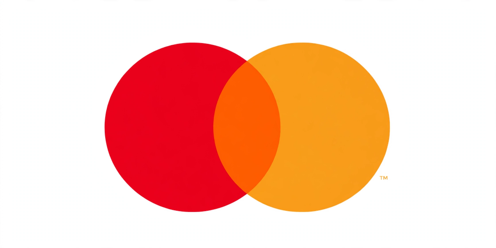

Mastercard

Image: Mastercard logo — interlocking red and orange circles | |
| Type | Public |
|---|---|
| Industry | Financial services, payment systems |
| Founded | 1966 (as Interbank Card Association) |
| Headquarters | Purchase, New York, U.S. |
| Area served | Worldwide (210+ countries and territories) |
| Products | Credit, debit and prepaid cards; payment processing |
| Revenue | ~US$25 billion (approx., 2023) |
| Employees | ~33,000 (approx.) |
| Website | mastercard.com |
Mastercard Inc. is an American multinational payment card services corporation headquartered in Purchase, New York. It is the second-largest payment-processing corporation worldwide, after Visa, operating a global network connecting consumers, merchants, banks and governments in more than 210 countries and territories.
History
Mastercard began in 1966 when a group of California banks formed the Interbank Card Association to compete with BankAmericard, issuing the "Master Charge" card. Renamed MasterCard in 1979, the brand adopted its famous interlocking-circles logo and expanded worldwide through alliances, including with Europay.
In 2002 the association merged with Europay International and reorganised as a private share corporation; it went public on the New York Stock Exchange in 2006. In 2016 the company shortened its name to Mastercard and later dropped the wordmark from its logo entirely, relying on the circles alone.
Operations and products
Like its main rival, Mastercard does not issue cards or lend directly; it licenses its brand and network to issuing banks and earns fees based on transaction volume ("swipe fees"), which have been the subject of major merchant antitrust settlements. Brands include Maestro and Cirrus, and the company has invested heavily in contactless payments, tokenisation, fraud analytics and real-time payments.
See also
Visa Inc. · American Express · Discover Card · Interchange fee